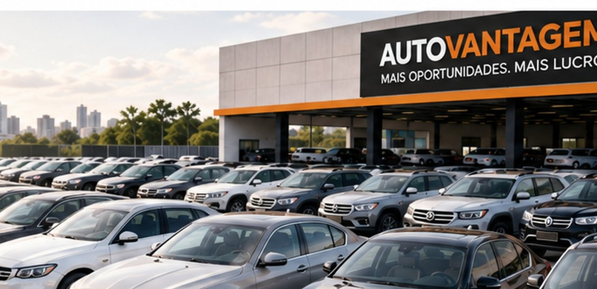

Quero comprar abaixo da tabela
Veja como funciona a seleção de oportunidades, as informações do veículo, a análise de condição e a intermediação para comprar com segurança e potencial de margem.
Entender e comprarA AutoVantagem conecta compradores, vendedores, lojistas e revendedores por meio de uma rede fechada de compradores, transformando informação, alcance e velocidade em oportunidades reais de negócio.

Três caminhos. Cada um leva a uma página objetiva, com as informações e o processo correspondentes.
Veja como funciona a seleção de oportunidades, as informações do veículo, a análise de condição e a intermediação para comprar com segurança e potencial de margem.
Entender e comprar
Entenda como seu veículo é apresentado à rede fechada de compradores, como funciona a avaliação e como buscamos reduzir burocracia e acelerar a negociação.
Entender e venderConheça a rede profissional, o fluxo contínuo de veículos e as oportunidades selecionadas para gerar giro, margem e recorrência comercial.
Conhecer oportunidadesEm menos de um minuto, entenda a rede de compradores, as informações que apoiam a negociação e as três formas de fazer negócio com a AutoVantagem.
Informação, rede qualificada e intermediação para aproximar as melhores oportunidades das pessoas certas.
Quilometragem, histórico de avarias e reparos e laudo cautelar, quando disponíveis, ajudam a reduzir incertezas antes da negociação.
Uma rede fechada de compradores profissionais amplia a exposição das oportunidades e aproxima quem quer vender de quem está pronto para comprar.
Oportunidades abaixo da tabela, potencial de margem para revenda e processo orientado à agilidade, transparência e segurança.